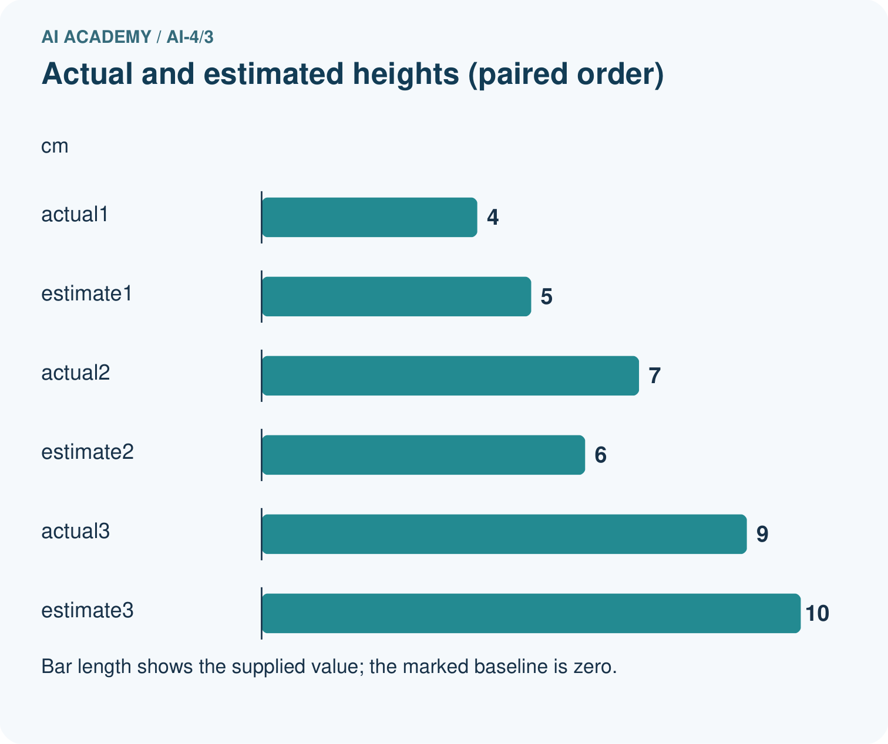
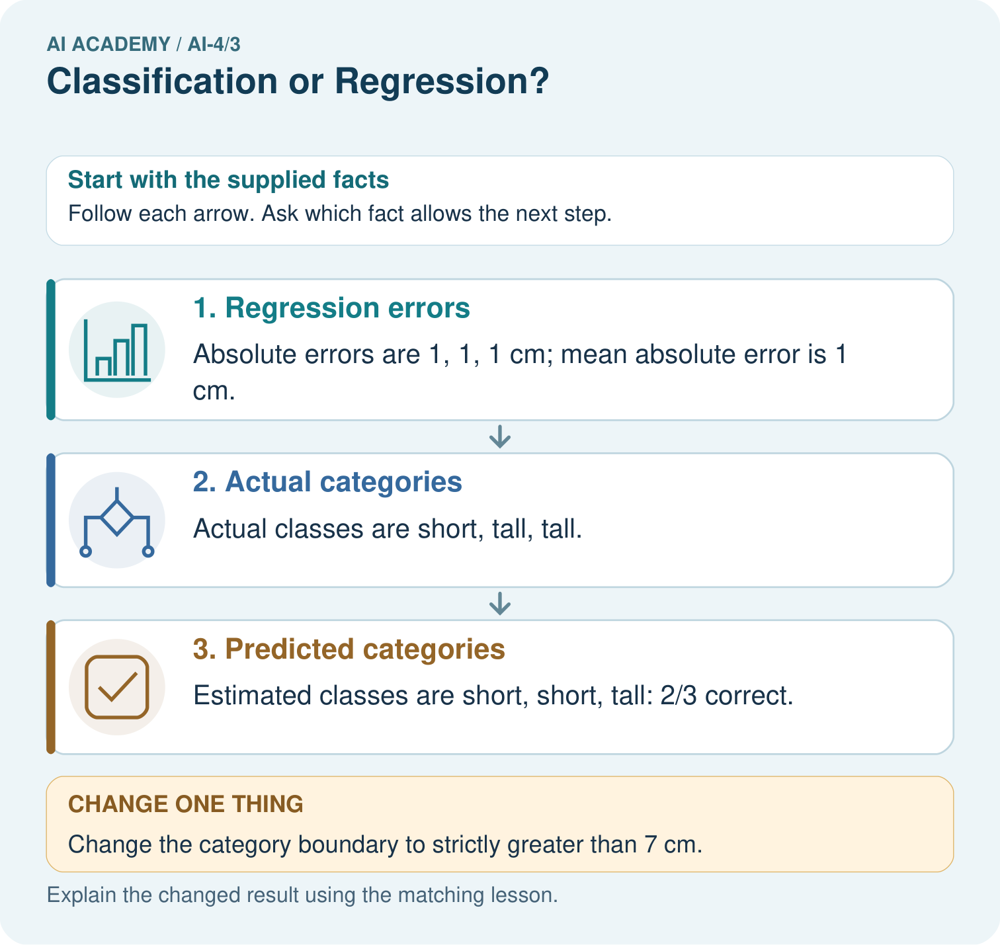

AI Academy · Level 4 · Grade 9 · Week 3 · Teacher guide
Classification or Regression?
Learn to understand, design, build, test and explain AI systems responsibly.
Project: Responsible Plant Classifier
Teacher guide · 1 of 8
Classification or Regression?
Teach the learning cycle
Primary target: Identify a task from the meaning of its target
| Session | Sequence and minutes | Resources |
|---|---|---|
| Session 1 · Understand · 45 min | 0–7: recall and prerequisite; 7–15: inspect the concrete case and predict; 15–30: teacher models the worked trace; 30–40: learners explain a step using the text and visual; 40–45: check the core idea. | Sections 1–6; record the brief recall in the workbook. |
| Session 2 · Practise · 45 min | 0–5: retrieve the procedure; 5–15: W2 completion practice; 15–23: explain and check with a partner; 23–30: each learner answers the misconception check; 30–40: targeted reteaching or a harder variation; 40–45: prepare the investigation. | Sections 7–10; use the matching workbook W2 and misconception check. |
| Session 3 · Investigate and transfer · 45 min | 0–5: retrieve the decision rule; 5–20: investigate or trace; 20–30: start the independent case; 30–38: connect the project; 38–43: act on feedback; 43–45: plan the return check. | Sections 9 and 11–14. Give extra time to finish the full task set; use Section 15 when the week includes a coding lab. |
This is a starting allocation of 135 minutes, not a validated duration. Preserve all named topics. Schedule extra time for connected examples, the full investigation, independent cases and project building. Repeated copies of a case share one recorded attempt; they are not new evidence.
Retrieval answer guidance
Features, Labels, Targets
Without opening the old lesson, explain one key idea from Features, Labels, Targets. Give an example and a mistake that the idea helps you avoid.
Look for: Separate prediction inputs from observed targets
Reference example, not the only acceptable wording: Candidate features are pages and queue_at_checkout. The target is returned_late and the tracking field is loan_id. days_to_return is known only after return and directly defines the target, so it must not enter checkout predictions.
Use the student module and workbook section with this exact week title. The worked case, independent question and answers below form one aligned lesson sequence.
What the learner must demonstrate
System A predicts class codes 0=oak,1=maple. System B predicts leaf area in cm². Name the task types and explain why code 1 is not 'one more species' than code 0.
Concept to explain
Classification predicts a category; regression predicts a numerical quantity. The target—not the input format—determines the task type.
| Term | Meaning |
|---|---|
| classification | predict a category |
| regression | predict a number |
| class | one allowed category |
| continuous target | number that can vary across a range |
Prepare the class
Use the supplied scenario, student illustrations and blank paper. For numeric work, offer counters or a calculator after learners show the setup. Fictional records are supplied; personal data and paid accounts are unnecessary.
Allow 80 minutes: recall 8; explanation 12; worked demonstration 15; guided practice 20; independent assessment 15; project and reflection 10. Extend the lab into a second session when needed.
Preparation for the connected explanation
Use two 45-minute sessions to distinguish tasks by target meaning, not by input types or whether values contain decimals. Connect to Week 2 by keeping inputs available at dispatch and outcomes separate. Supplied duration estimates let students inspect category decisions and numerical errors without suggesting a model was trained. The threshold is fixed before evaluation. All examples are fictional.
Readiness answer
No. It is known later and is the outcome to predict, not an available dispatch-time input.
Printed lesson and workbook
Number line marked at 10 minutes and cards for no and yes
Optional Python 3 editor; no packages needed
Blank actual estimate category absolute error table
End goal for the pictorial case
By the end, I can explain classification or regression? using a traced example and a stated limitation.
This added worked case illustrates the week’s main idea. Retain all original and connected topics; schedule its practice within the teaching cycle.
Teacher guide · 2 of 8
Explain the mechanism
Explain the mechanism
Trace the information, fitted behavior, and evaluation proof separately.
QUESTION Choose the task type for six scenarios and define the output space precisely.
MODEL IDEA Classification predicts a category; regression predicts a numerical quantity. The target—not the input format—determines the task type.
PROOF NEEDED Use an unseen case, visible calculation, error analysis, and a stated limitation.
UNDER THE HOOD Predict plant species from a photo: target is a category, so classification. Predict plant height next week: target is centimeters, so regression.
Draw a fresh data → model → prediction → evaluation trace:
Predict first. Then check each step. A correct answer without visible evidence cannot be audited.
STEP 1 Predict plant species from a photo: target is a category, so classification.
STEP 2 Predict plant height next week: target is centimeters, so regression.
STEP 3 Predict low/medium/high growth: categories, even though ordered.
STEP 4 State allowed classes or numerical unit before selecting a model and metric.
CHECK Verify the denominator, unit, split, class definition, and data version before interpreting a score.
Recalculate, retrace, or restate the evidence independently:
Concrete teaching case
Task A predicts healthy/spotted; B predicts next week's height in cm.
Choose task and output types.
Exact explanation to model
A is classification with categorical output; B is regression with numeric output and units. Numeric class codes do not make classification regression.
Explain the added worked example
At robot dispatch, we can ask two questions about the same fictional trip. Will it take more than 10 minutes? Or how many minutes will it take? The first asks for a category. The second asks for an amount with units. The target question determines the task, even if both models would use the same dispatch-time inputs.
Classification predicts a category from a defined set. Regression estimates a numerical quantity for which differences have meaning. A category may be coded with numbers: 0 and 1 here are names for no and yes, not travel times. Conversely, a duration recorded as a whole number of minutes can still be a regression target. Decimal points do not decide the task.
Keep Week 2's prediction time: route length and the saved queue may exist at dispatch, while the observed duration is available later for training or evaluation. Do not feed that observed duration into an earlier dispatch prediction.
The following predictions are supplied for practice; no model is fitted here. Each estimate was written before revealing its matching observed duration. We compare duration error with a category decision made from that estimate. Predict slow when the estimated duration is greater than 10 minutes; exactly 10 is not slow. A classifier could also predict categories directly, but this example uses a threshold on estimates.
zip pairs the lists in order. They must have equal lengths and refer to the same trips; otherwise this loop is not a valid evaluation. abs gives the distance from zero, so both a one-minute overestimate and a one-minute underestimate have absolute error 1. The output is 2 3 followed by [1, 1, 2]. The mean absolute error is (1 + 1 + 2) / 3 = 4/3 minutes, about 1.33 minutes.
Key terms
| Term | Meaning |
|---|---|
| Classification | Predicting a category from a defined set |
| Regression | Estimating a numerical quantity with meaningful differences |
| Threshold | A boundary used to turn a value into a decision |
| Absolute error | The nonnegative distance between an estimate and an observation |
Model the reasoning aloud
Use the complete worked example below before asking learners to complete W2. Reveal a small part, invite a prediction, then explain the deciding step. These teacher notes contain solutions; do not reveal the independent case answer during modelling.
The 14-minute trip has the largest duration error in our example, yet its slow category is correct. The 10-minute trip has only a one-minute error but the category is wrong. These checks answer different questions. Report 2 correct out of 3 category decisions separately from a mean absolute error of about 1.33 minutes. Do not compare a fraction directly with minutes.
| Thinking move | Teacher prompt |
|---|---|
| Plan | What is given? What is the question? Which procedure fits these facts? |
| Do | Point to each input and intermediate step in the worked trace. Name the rule that allows the next step. |
| Check | Does the output answer the question? Which assumption or limitation prevents a larger claim? |
Use the diagram and verbal explanation together. Ask learners to match a sentence to a specific visual step; do not assign learners fixed visual or auditory learning styles.
A pictorial worked case: Classification or Regression?
Distinguish predicting growth height from predicting a growth category.
The facts we will use
Actual heights are [4, 7, 9] cm; estimates are [5, 6, 10] cm. Tall means strictly greater than 6 cm.
All inputs and outcomes in this worked example are invented classroom data; no real model run is claimed.


Read the picture one step at a time
Why this result follows
Read the picture in order. Estimated classes are short, short, tall: 2/3 correct. The arrows show which recorded input or intermediate result each decision uses. Explain the deciding step aloud before checking the changed case; pointing to the final answer alone does not show how it follows.
What this example does not establish
Regression error and category accuracy measure different targets; neither alone covers every use consequence.
Change one thing in the pictured case
Change: Change the category boundary to strictly greater than 7 cm.
Prediction: Actual and estimated categories both become short, short, tall: 3/3 correct.
Reason: The numerical estimates did not improve; the decision definition changed.
Ask while showing the picture
Cover the result. Ask learners to name the inputs and predict the next step. Uncover one step, connect the icon to the actual procedure, and explain its evidence. Then change the supplied condition and compare. The picture is a representation; it does not document execution of a real AI model.
Teacher guide · 3 of 8
Demonstrate and guide practice
Demonstrate and guide practice
Board sequence
Write the given facts: Task A predicts healthy/spotted; B predicts next week's height in cm.
Write the question to explain: Choose task and output types.
Reveal after predictions: A is classification with categorical output; B is regression with numeric output and units. Numeric class codes do not make classification regression.
Keep for an independent attempt: Task A predicts whether a plant is fern or grass. Task B predicts its height in centimetres. Which is classification and which is regression?
Classroom dialogue
Ask: Which facts are given, and which would we have to assume? Learners mark relevant details before discussing answers.
Say: Predict first. Show the rule, information path or calculation that would produce the result. A correct guess is not yet an explanation.
Reveal reasoning one step at a time. Explain why a tempting alternative fails. Write units and denominators for arithmetic, trace conditions for decisions, and identify supporting sources for claims.
In pairs, one learner solves while the other checks evidence; exchange roles. Remove the worked answer before independent assessment.
Model these guided questions
Guided: actual category 0, predicted category 1, absolute duration error 0.5 minutes; the category is wrong. Exit: specify regression for duration in minutes and use a numerical error check such as mean absolute error in minutes. Category agreement does not report how close the duration estimates are to observed times.
Case-specific teaching sequence
| Stage | Teacher action |
|---|---|
| Session 1 start to 7 minutes | Retrieve the Week 2 rule that later outcomes cannot be dispatch inputs. Ask the prerequisite question and keep the prediction moment visible. |
| 7 to 18 minutes | Compare the three target questions. Ask why numeric category codes remain categories and why whole-minute durations remain quantities. |
| 18 to 32 minutes | Trace the three supplied estimates. Explain abs and zip, including equal lengths and matching record order. Complete W1 and W2. |
| 32 to 45 minutes | Use the number line for the guided 10 versus 10.5 case. Separate category agreement from numerical closeness. |
| Session 2 start to 8 minutes | Retrieve task meaning and units. Ask for a numerical category code and a whole-number quantity as counterexamples to the decimal shortcut. |
| 8 to 20 minutes | Complete W3 and discuss information lost by binning. Distinguish directly predicting a class from thresholding a quantity estimate. |
| 20 to 35 minutes | Collect W4 independently, requiring category lists, denominator, absolute errors and the mean with units. Record hints or other support. |
| 35 to 45 minutes | Use W5 and the exit to match outputs to a user need. Offer the fresh retry after support where necessary. |
Reduce help deliberately
Completion task: For actual 14 minutes and estimate 12 minutes, calculate absolute error and both slow categories using greater than 10. Explain why a correct category does not mean an exact duration.
Teacher check: Absolute error is 2 minutes. Both actual and predicted categories are 1, so the category matches even though the duration estimate is 2 minutes too low.
Start by identifying the given inputs together. Leave the intermediate steps blank. If needed, model one step, then withdraw that help on the next step. Move to a full trace only when the partial trace is understood. For partners, alternate explainer and checker; collect a response from every learner before discussion.
Individual reasoning check
Use the worked case for Classification and regression. Proposed explanation: “Numbers always mean regression”. Decide whether this explanation is supported. Point to the step or supplied fact that decides; explain your repair if needed.
Expected correction: Category codes remain categories. Ask what a difference between the numbers would mean in the task.
Collect explanations, not only yes/no votes. If a misunderstanding is common, re-model the relevant step for the class. If it affects a few learners, give a short targeted group explanation while others solve a more demanding variation.
Pictorial practice question
Did regression MAE improve when the boundary changed? Point to the relevant step in the picture, then write the changed result and the rule or evidence that supports it.
Reasoned teacher answer
No. MAE remains 1 cm. Category agreement rose because the class boundary changed, not because predictions became numerically closer. Changed-case check: Actual and estimated categories both become short, short, tall: 3/3 correct. The numerical estimates did not improve; the decision definition changed.
Changed-case reasoning: Actual and estimated categories both become short, short, tall: 3/3 correct. The numerical estimates did not improve; the decision definition changed.
Collect each learner’s explanation before discussion. Use the first missing connection between input, deciding step and result to choose support. This question is worked-case practice, not fresh mastery evidence.
Teacher guide · 4 of 8
Run the weekly evidence lab
Run the weekly evidence lab
Keep the test conditions fixed, record every result, and change only one planned factor.
1. Write the hypothesis and expected evidence before running.
2. Task-Type Clinic: classify six problem statements, rewrite vague targets, and match each to a useful metric.
3. Run one normal, one boundary, one missing, and one shifted case.
4. Calculate the metric from raw counts or row-level errors.
5. Interpret what changed, what did not, and what remains unsafe or unknown.
Make the lab runnable
Use the concrete case as the shared normal case and the independent question as a second case. Each pair creates a boundary or missing-information case and predicts its result before testing. Keep the expected result separate from an observed mistake.
| Record | What to capture |
|---|---|
| Input or evidence | Exact data, instruction or claim |
| Expected result | Answer or safe fallback declared before the run |
| Observed result | Actual result, including errors |
| Explanation | Rule, calculation or evidence explaining the outcome |
| Next test | One justified change and a new prediction |
Diagnose and reteach
MISCONCEPTION TO REPAIR A photograph always means classification and a table always means regression.
For guessing, return to given facts and request a trace. For vocabulary without application, use one example and one non-example. For arithmetic errors, check the setup before the calculation. Finish with a different uncoached case before recording mastery.
Address these additional misconceptions
Numbers always mean regression: Category codes remain categories. Ask what a difference between the numbers would mean in the task.
Regression requires decimal observations: A quantity measured or rounded to whole minutes still has meaningful numerical distances. Target meaning decides the task.
A correct category means a precise estimate: The 14 versus 12 minute example has a correct category but a two-minute error. Conversely, a small error near the boundary can change the category.
Match the support to the first error
| What the response shows | Next teaching action |
|---|---|
| Missing or misread facts | Read the case aloud, mark supplied versus unknown facts, and let the learner restate it. |
| Wrong procedure | Return to the deciding step in the worked case. Contrast it with the proposed incorrect explanation. |
| Arithmetic or implementation error | Trace intermediate values or lines; preserve the first mismatch and retry that step. |
| Correct result without a reason | Ask for a trace and a changed case before marking independent understanding. |
| An unsupported wider claim | Ask which supplied evidence supports the claim and which further observation would be needed. |
Offer an oral explanation, drawing, enlarged visual or fewer examples when that removes a reading/writing barrier. Keep the same reasoning goal. Stretch secure learners by changing a boundary or assumption and asking them to defend the effect, not simply by assigning more of the same questions.
Teacher guide · 5 of 8
Assess and explain the answers
Assess and explain the answers
Worked case answer
A is classification with categorical output; B is regression with numeric output and units. Numeric class codes do not make classification regression.
Independent question
Task A predicts whether a plant is fern or grass. Task B predicts its height in centimetres. Which is classification and which is regression?
Expected independent answer
A is classification because it selects a category; B is regression because it predicts a numerical quantity.
What counts as evidence
| Criterion | 0 points | 1 point | 2 points |
|---|---|---|---|
| Result | Incorrect or absent | Partly correct | Correct with necessary conditions |
| Reasoning | No supporting trace | Some steps | Clear mechanism, calculation or source support |
| Limit | Overclaims certainty | Vague limitation | Relevant uncertainty or missing fact |
| Transfer | Copies without adapting | Adapts with prompts | Solves a changed case independently |
Use 6/8 as a classroom checkpoint, with 2 required for both Result and Reasoning. This is a proposed teaching rule, not a validated certification threshold. Do not count a coached answer as independent mastery; correct unsafe or unsupported claims regardless of total.
Feedback
Ask the learner to find the evidence that challenges this claim: “Any task involving plant measurements is regression.” Keep the first attempt and an uncoached retry separate.
Original transfer answer
A is classification; B is regression. The codes name categories and do not establish arithmetic differences between species. Area is a numeric target with meaningful units and distances; choose evaluation appropriate to each output.
Explanations for the additional workbook examples
W1 Classify the target meaning
At dispatch, identify the task for predicting route type coded 1 or 2, duration in whole minutes, and whether duration exceeds 10 minutes. Explain your choices.
Route type is classification because 1 and 2 encode categories. Whole-minute duration is regression because numerical differences measure time. Exceeding 10 minutes is binary classification because the target is yes or no.
W2 Trace both checks
For actual 14 minutes and estimate 12 minutes, calculate absolute error and both slow categories using greater than 10. Explain why a correct category does not mean an exact duration.
Absolute error is 2 minutes. Both actual and predicted categories are 1, so the category matches even though the duration estimate is 2 minutes too low.
W3 Repair a category average
Indoor is coded 1 and outdoor is coded 2. Someone averages predictions and reports route type 1.5 as an accurate halfway category. Explain the problem and name an appropriate check.
The codes label categories, so 1.5 is not a defined route type. Predict one of the defined categories and compare it with the observed category. A numerical midpoint of arbitrary codes does not establish correctness.
W4 Compare new evidence independently
For three fictional print jobs, actual completion times are 4, 5 and 9 minutes; estimates are 6, 5 and 8 minutes in matching order. Slow means more than 5 minutes. Write actual and predicted category lists, count correct categories, calculate each absolute error and the mean error in minutes. State what each result measures.
Actual categories are [0, 0, 1]; predicted categories are [1, 0, 1], so 2 of 3 match. Absolute errors are [2, 0, 1] minutes; their mean is 1 minute. The fraction measures threshold-category agreement on these jobs, while mean absolute error measures average duration discrepancy.
W5 Specify a useful output
A user needs the arrival duration in minutes, but a report gives only slow or not slow. What task should be specified, and what information was lost by the category output?
Specify regression for duration in minutes and check numerical error, such as mean absolute error in minutes. The category omits the estimated duration and how far it is from the boundary; it cannot answer the requested quantity.
Assess independent transfer
Selected case: For three fictional print jobs, actual completion times are 4, 5 and 9 minutes; estimates are 6, 5 and 8 minutes in matching order. Slow means more than 5 minutes. Write actual and predicted category lists, count correct categories, calculate each absolute error and the mean error in minutes. State what each result measures.
Selected case answer
Actual categories are [0, 0, 1]; predicted categories are [1, 0, 1], so 2 of 3 match. Absolute errors are [2, 0, 1] minutes; their mean is 1 minute. The fraction measures threshold-category agreement on these jobs, while mean absolute error measures average duration discrepancy.
| Dimension | Evidence required |
|---|---|
| Explanation | Names the applicable idea or procedure and ties it to the supplied facts. |
| Trace and result | Preserves the given inputs and shows the relevant intermediate steps; distinguishes a prediction from an observed execution. |
| Limits | States the assumptions, missing evidence or conditions under which the result would change. |
Record each dimension as not yet, with support, or independent. Accept a valid alternative procedure with a defensible trace. Do not penalise an honestly recorded model failure if the learner correctly explains its evidence and limits.
Feedback that the learner uses
Name the earliest unsupported step and give one action to repair it. Have the learner make that repair now and explain why. Then assess the relevant skill on a fresh, fully specified case. Confirm it was not previously practised with feedback; solve and check the new case before assigning it. A follow-up design prompt is a starting brief, not automatically an equivalent test.
Teacher guide · 6 of 8
Connect and extend learning
Connect and extend learning
Responsible Plant Classifier
Confirm whether Plant Classifier predicts a health category or a numerical severity score; document why.
Keep the decision, input, result, explanation and remaining limitation in the project evidence record. Retrieve this record next week rather than restarting the project.
Support and stretch
Use a tiny labelled dataset, explicit units and a named positive class. Stretch: require a baseline, held-out evaluation and subgroup or shifted-condition analysis with denominators.
Exit reflection
Ask for one decision the learner can now justify and one situation requiring more evidence or human review. Confidence ratings are separate from correct independent performance.
Bridge to the next week
Next: Week 4: Python and Table Readiness. Retrieve today’s evidence and identify what carries forward and what is new.
Support and fresh reassessment
Use a number line to mark actual and estimated times, then color which side of the boundary each lies on. Supply a blank table without answers. Extension: recode no and yes as 7 and 9. The classification task and matching count stay the same, while distances between those codes are not time errors.
Require W4 actual categories [0,0,1], predicted [1,0,1], 2 of 3 correct, absolute errors [2,0,1] and mean 1 minute. The learner must explain both meanings. Fresh retry: actual times 3,6,8 and estimates 4,5,10; slow means greater than 6. Actual and predicted categories are both [0,0,1], so 3 of 3 match. Absolute errors [1,1,2] have mean 4/3 minutes, about 1.33. Ask why perfect category agreement does not mean zero duration error.
Week 4 inspects datasets and documents their origin, units and limitations. Carry forward the target definition, prediction moment and measurement units. Teacher reference: https://scikit-learn.org/1.0/tutorial/basic/tutorial.html (classification and regression definitions; reviewed 2026-09-26).
Plan the delayed return
Suggested return points in this level: ai-4/4, ai-4/6, ai-4/9. Use actual classroom dates, adjusting for holidays and gaps. One, three and six teaching weeks are scheduling choices, not a claimed optimal spacing.
At a delayed check, ask for the idea from memory and a changed application. Compare with the earlier independent response and record support used. For a new level, revisit the previous capstone before checking the new prerequisites.
| Record | Teacher evidence |
|---|---|
| Learner code and date | |
| Concept and case used; prior exposure | |
| Explanation / trace / limits | |
| Support and first repair | |
| Changed case and delayed outcome | |
| Next teaching action |
Use the evidence to choose reteaching or the next step. A completed page, confidence rating or attractive project does not by itself demonstrate understanding.
Project evidence from this case
For your Responsible Plant Classifier, save the input, procedure, observed result and limitation of this check. Label this worked example as practice; use a different, previously unreviewed case when checking independent understanding.
Teacher guide · 7 of 8
Prepare, teach and assess
Teaching target: Identify a task from the meaning of its target
Prepare the labelled worked-case picture, the matching workbook, fictional input cards and a place for individual responses. Check a local Python 3 environment before class; have a paper-trace version ready.
| Session | Plan | Resources |
|---|---|---|
| Session 1 · Understand · 45 min | 0–7: recall and prerequisite; 7–15: inspect the concrete case and predict; 15–30: teacher models the worked trace; 30–40: learners explain a step using the text and visual; 40–45: check the core idea. | Sections 1–6; record the brief recall in the workbook. |
| Session 2 · Practise · 45 min | 0–5: retrieve the procedure; 5–15: W2 completion practice; 15–23: explain and check with a partner; 23–30: each learner answers the misconception check; 30–40: targeted reteaching or a harder variation; 40–45: prepare the investigation. | Sections 7–10; use the matching workbook W2 and misconception check. |
| Session 3 · Investigate and transfer · 45 min | 0–5: retrieve the decision rule; 5–20: investigate or trace; 20–30: start the independent case; 30–38: connect the project; 38–43: act on feedback; 43–45: plan the return check. | Sections 9 and 11–14. Give extra time to finish the full task set; use Section 15 when the week includes a coding lab. |
Before class, solve the supported practice: For actual 14 minutes and estimate 12 minutes, calculate absolute error and both slow categories using greater than 10. Explain why a correct category does not mean an exact duration.
Reasoned practice answer: Absolute error is 2 minutes. Both actual and predicted categories are 1, so the category matches even though the duration estimate is 2 minutes too low.
Check every learner before discussion: Use the worked case for Classification and regression. Proposed explanation: “Numbers always mean regression”. Decide whether this explanation is supported. Point to the step or supplied fact that decides; explain your repair if needed.
Misconception repair: Category codes remain categories. Ask what a difference between the numbers would mean in the task.
Support: read the exact case aloud, enlarge the labelled picture, supply input cards and model only the first deciding step. Accept a spoken explanation or drawing; retain the reasoning goal.
Extension: Change the category boundary to strictly greater than 7 cm. Require a prediction and a reason before comparing. Expected result: Actual and estimated categories both become short, short, tall: 3/3 correct. Reason: The numerical estimates did not improve; the decision definition changed.
Independent assessment: withhold the reserved answer until the learner has attempted the new case. Record support separately from correctness.
| Criterion | Not yet | With support | Independent |
|---|---|---|---|
| Explanation | Names an answer without a deciding fact | Uses a hint to link fact and decision | Explains the deciding fact in own words |
| Trace or test | Cannot connect input and result | Completes steps with prompts | Traces or tests a changed case accurately |
| Limits and revision | Claims more than evidence supports | Names a limit after a prompt | States a defensible limit and useful next test |
Project checkpoint: Frame the need. Name the user, the problem, allowed inputs and a safe simple starting method.
Use the weekly teacher answer for topic-specific reasoning. A saved progress tick is an activity record; judge mastery from the learner’s explanation and evidence.
Teacher guide · 8 of 8
Use feedback, labs and repair paths
Use the two formative questions as supported practice, not as independent mastery scores. Discuss the deciding evidence rather than accepting a guessed selection.
The feedback comes from the reviewed public worked case. Do not reveal the separately reserved independent teacher answer until the learner has attempted that case.
Ask students to predict before running code. Preserve errors and actual outputs; collect a changed test and an explanation. The branch-boundary and indexing lessons deliberately include failure cases.
Use the earlier worked-explanation links to address a specific missing building block, then return to the current question. Adapt this suggestion after observing the learner; it is not an automatic diagnosis.
Collect the completed-work portfolio as evidence. Record support separately from correctness, and assess explanation, trace/test and limitations. Progress ticks and quiz selections alone do not establish mastery.